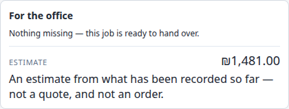

Signed sale to a saved, documented job
The current app records the layout and reports what the office still needs. It does not yet transfer a versioned source package to an office inbox.
Corrected after a hands-on walkthrough of the existing Salesperson UI. The earlier wizard and submission states were proposals, not the current application.
Latest: salesperson simulations and product research, round 2Round 1: four role simulations
The actual path through the app
Starting material: the signed contract, drawing, photos and WhatsApp messages already held by the salesperson. These remain outside the current UI; no source-upload control was found in Salesperson mode.
Create and identify
New job, then customer, address, salesperson and sold date. Save job details.
Draw the site
Measured fence runs; house rectangle and street line. Edit labels and handles.
Record what was sold
Height, base, model and gates. Record slope and inspect the side view.
Preserve promises
Original text attached to the whole job or a run. Optional AI interpretation requires confirmation.
Check completeness
Missing-item list, warnings and optional generated estimate. The project is saved.
These are activities within two existing tabs, not a forced sequence of five screens. The salesperson can return to drawing and notes.
What that workspace actually looks like

Real application screenshot, using a separate demo database. The estimate and catalog are example data.
Four bugs to fix before trusting readiness
| Reproduced problem | Required correction |
|---|---|
| B01 / High: failed check says ready. A simulated HTTP 500 on an empty job still displayed “Nothing missing.” | Separate unavailable data from a completed check. Reproduction and failure diagram |
| B02 / High: partial coverage passes. Height or model stated for only 1 m of a 5 m run produced no gaps in direct function checks. | Check coverage across the full fence, including explicit defaults. Coverage diagram and evidence |
| B03 / Medium: conflicting model feedback. Per-run models are saved, but the summary says none chosen and points to a hidden tab. | Distinguish project defaults from stretch assignments and provide an accessible edit path. Actual screenshots |
| B04 / Medium: labels revert on refresh. Salesperson mode remains, but engineering labels return. | Apply role-specific translations after restoring the role. Screenshot and source |
Three MVP gaps
Original sale attachments; explicit office transfer and receipt; structured fields for sold details such as finish and gate opening direction.
Evidence and scope decisionsSix UI improvements
Visible readiness status; actionable missing items; a readable stretch summary; clear ownership of technical inputs; saved values distinct from defaults; pricing aligned with the signed-sale workflow.
Detailed improvement proposalsWhat “ready” currently means
The example job reached the ready state after recording job identity, context and fence specifications. The generated result supplied a qualified estimate.
It reached this state without contract/photo/message attachments. A warning about different bases at a shared corner also remained visible. Separate tests then reproduced false readiness on a failed request and on partial specification coverage; the screenshot here is the original successful walkthrough, not those failure tests.
The readiness message is not an office approval or a complete audit of the sale evidence.

Corrections to the first visualization
| Earlier proposed experience | Existing experience |
|---|---|
| Job & documents / Layout / Review wizard | The job and Notes tabs; job and handover panels sit beside the canvas. |
| Add measured stretch dialog and fixed dimension inspector | Click, aim and type on the canvas; select a run label for exact length editing. |
| Unified height/base/model/gate form | Separate tools open popovers when a run is clicked; saved choices appear as run events. |
| Uploaded drawing beside the structured layout | House/street context is drawn. Upload and tracing are not present in this role. |
| Gate direction and agreed finish fields | The tested gate form contains width and kit. No unified agreed-finish field was found in this flow. |
| Submission, office inbox and acceptance loop | Saved project and an in-page completeness checklist. Those workflow states remain proposed. |
Evidence
Browser-verified: job creation/save, typed runs, length edit, undo/redo, bend insertion, context, height/base/model/gate/slope entry, side-view base editing, site conditions, notes, stub AI confirmation, generation, units, Hebrew RTL and reload persistence.
Audit details and limitations · Existing MVP specification. Application source and customer data were not changed.